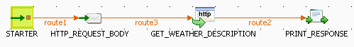
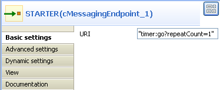
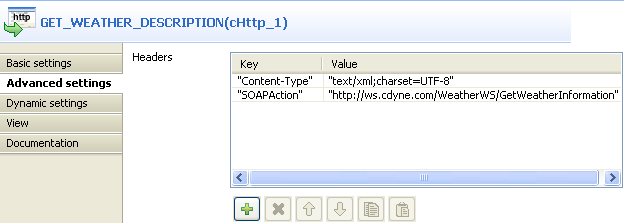
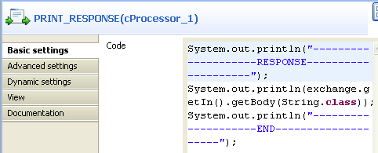
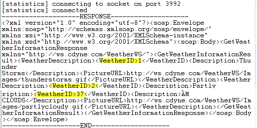

|
Famille de composant |
Messaging | |
|
Fonction |
Le composant cHttp fournit des endpoints basés HTTP pour consommer des ressources HTTP externes, c'est-à-dire en tant que client appelant des serveurs externes à l'aide de Http. | |
|
Objectif |
Le cHttp est conçu pour construire un endpoint client afin d'appeler des ressources HTTP externes à l'aide de Http. | |
|
Basic settings |
Uri |
Saisissez l'URI de la ressource HTTP à appeler. |
|
Method |
Liste des méthodes de requêtes HTTP. | |
|
Get |
Récupère les informations identifiées par l'URI de la requête : Parameters : cliquez sur le bouton [+] pour ajouter le nombre de lignes nécessaire et définir leur clé et leur valeur dans la table. Encoder Charset : saisissez le jeu de caractères de l'encodeur dans le champ. | |
|
Post |
Demande via une requête que le serveur d'origine accepte l'entité dans la requête comme une nouvelle subordonnée de la ressource identifiée par l'URI de la requête : Plain text : saisissez le texte dans le champ Content du message de la requête. Form Style : cliquez sur le bouton [+] afin d'ajouter des lignes et de définir leur clé et leur valeur dans la table Parameters. Saisissez également le jeu de caractères de l'encodeur dans le champ Encoder Charset. Use Message Body : utilisez le corps du message entrant comme requête HTTP. | |
|
Put |
Demande via une requête que l'entité soit stockée sous l'URI de la requête fournie. | |
|
Delete |
Demande via une requête que le serveur d'origine supprime la ressource identifiée par l'URI de la requête. | |
|
Head |
Identique à GET mais le serveur ne doit pas retourner le corps d'un message dans la réponse. Parameters : cliquez sur le bouton [+] pour ajouter des lignes et définir leur clé et leur valeur dans la table. Encoder Charset : saisissez dans ce champ le jeu de caractères de l'encodeur. | |
|
Options |
Représente une requête d'informations concernant les options de communication disponibles dans la chaîne requête/réponse identifiée par l'URI de la requête. | |
|
Trace |
Invoque le loop-back de la couche applicative distante du message de la requête. | |
|
Advanced settings |
Headers |
Cliquez sur le bouton [+] pour ajouter des lignes et définir la clé et la valeur des en-têtes. |
|
Utilisation |
Le composant cHttp fournit des endpoints basés HTTP pour consommer des ressources HTTP externes, c'est-à-dire en tant que client appelant des serveurs externes à l'aide de Http. | |
Dans ce scénario, le composant cHttp est utilisé pour interroger le corps d'un fichier de définition de condition météorologique disponible à l'adresse : http://wsf.cdyne.com/WeatherWS/Weather.asmx.
Déposez les composants suivants de la Palette dans l'espace de modélisation graphique : un cMessagingEndpoint, un cSetBody, un cHttp et un cProcessor. Nommez-les respectivement STARTER, HTTP_REQUEST_BODY, GET_WEATHER_DESCRIPTION et PRINT_RESPONSE.
Reliez les composants à l'aide de liens Row > Route.

Double-cliquez sur le cMessagingEndpoint pour ouvrir sa vue Basic settings.
Dans le champ URI, saisissez
timer:go?repeatCount=1afin de définir un délai avant de démarrer les échanges de messages. Dans cet exemple, un seul échange de messages est effectué selon la confguration derepeatCount=1.Double-cliquez sur le composant cSetBody pour ouvrir sa vue Basic settings.

Dans la liste Language, sélectionnez Constant.
Dans le champ Expression, saisissez le code suivant comme corps du message de la requête :
<soapenv:Envelope xmlns:soapenv=\"http://schemas.xmlsoap.org/soap/envelope/\" xmlns:weat=\"http://ws.cdyne.com /WeatherWS/\"><soapenv:Header/><soapenv:Body><weat:GetWeatherDefinitionInformation/></soapenv:Body></soapenv:Envelope>
Double-cliquez sur le cHttp pour ouvrir sa vue Basic settings.

Dans le champ Uri, saisissez l'emplacement du fichier à récupérer, http://wsf.cdyne.com/WeatherWS/Weather.asmx dans cet exemple.
Sélectionnez POST dans la liste Method puis cochez la case Use Message Body.
Cliquez sur Advanced settings pour configurer les paramètres avancés.
Cliquez deux fois sur le bouton [+] pour ajouter deux lignes dans la table Headers.
Saisissez
Content-Typeettext/xml;charset=UTF-8pour les champs Key et Value dans la première ligne etSOAPActionainsi quehttp://ws.cdyne.com/WeatherWS/GetWeatherInformationdans la seconde ligne.Double-cliquez sur le cProcessor pour ouvrir sa vue Basic settings.
Dans le champ Code, saisissez le code suivant pour afficher la réponse du site Web distant, c'est-à-dire le corps du fichier souhaité :
System.out.println("--------------------RESPONSE--------------------"); System.out.println(exchange.getIn().getBody(String.class)); System.out.println("--------------------END--------------------");Appuyez sur les touches Ctrl+S pour sauvegarder votre Route.
Cliquez sur l'onglet Code au bas de l'espace de modélisation graphique afin de visualiser le code généré.

Comme affiché ci-dessus, l'échange de messages démarre à partir (
from) de l'endpointSTARTER, récupère le corps défini comme<soapenv:Envelope xmlns:soapenv=\"http://schemas.xmlsoap.org/soap/envelope/\"xmlns:weat=\"http://ws.cdyne.com/WeatherWS/\"><soapenv:Header/><soapenv:Body><weat:GetWeatherDefinitionInformation/></soapenv:Body></soapenv:Envelope>dans lecSetBody_1et est envoyé au site Web spécifié par lecHttp_1. La réponse est écrite dans la console via lecProcessor_1.Appuyez sur F6 pour exécuter la Route.
Comme affiché ci-dessus, le fichier récupéré définit 37 conditions météorologiques avec leur description détaillée.